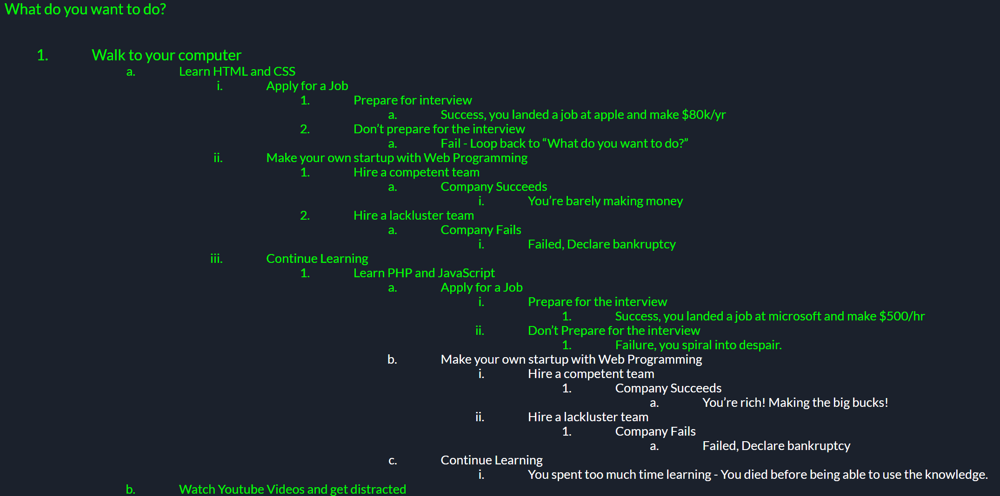

Leader Name: Matthew Yin
Project Name: Life of a Web Programmer
Description:
The project features an adventure game about an individual who decides to get his life together and learns web programming with all it's different paths.
- Anthony Montes
- Presented on the introduction for the powerpoint as well as the code for specific paths. The paths includes "Walking to your computer --> Watch Youtube Videos and get distracted", "Walking to your computer --> Making your own start up --> Company Succeeds/Fails", "Walking to your computer --> Continue Learning --> Continue Learning". Created the background animations for each Sucess/Fail webpage in the CSS file.
- Nafis Hoque
- Presented for the demo portion of the video as well as worked on the paths for "Walking to your computer --> Apply for a Job --> Success/Fail" and "Walk to your computer --> Learn HTML --> Make your own startup --> Success/Fail". Added the frame around the picture and question to the CSS file.
- Matthew Yin
- Presented on the important aspects code-wise portion of the video. Also worked on the webpages for "Walking to your computer", "Continue Sleeping", and the path for "Walk to your computer --> Learn HTML and CSS --> Continue Learning --> Learn PHP and JavaScript --> Apply for A Job --> Success/Failure" Webpages. Started the CSS file and made the parameters for the images, h1 font, and button.
